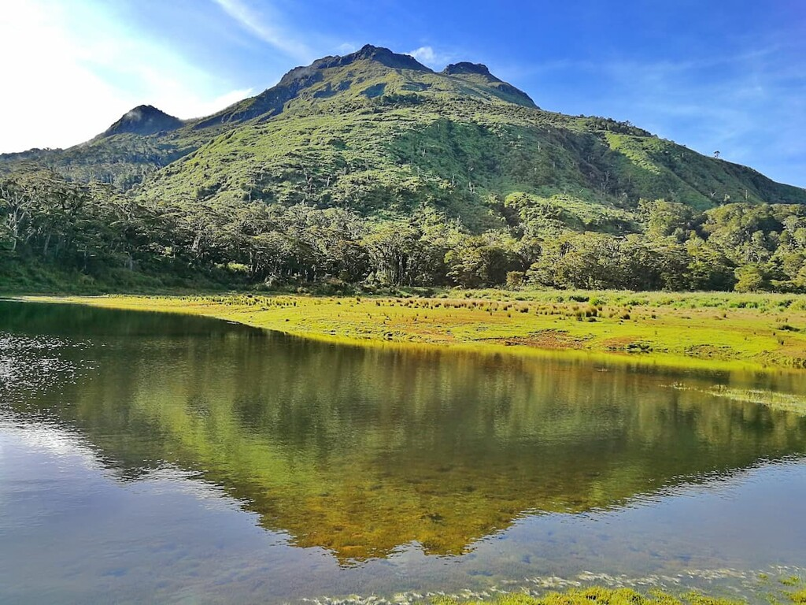
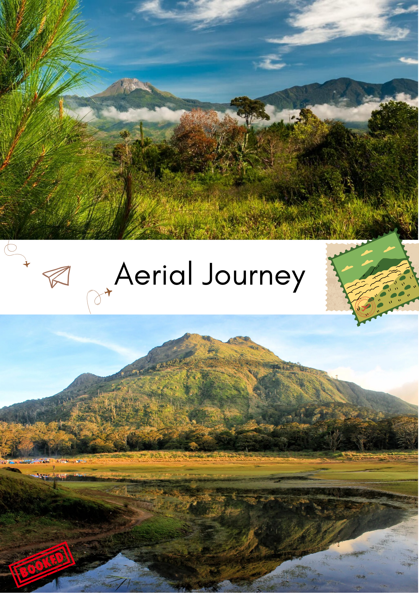
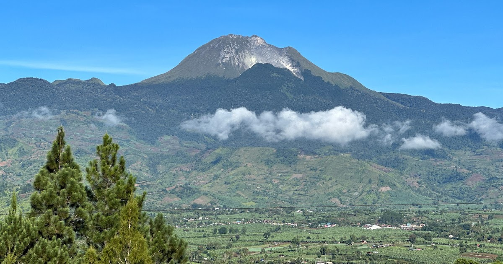

Mt. Apo Natural Park

Challenge yourself to climb Mt. Apo, the highest peak in the Philippines, standing proudly at 2,954 meters. Located in Davao, this natural park is home to rich biodiversity, including the majestic Philippine eagle. Whether you're an avid mountaineer or a nature lover, Mt. Apo offers an unforgettable journey through rugged landscapes, volcanic craters, and verdant forests. Bask in the triumph of reaching the summit and witnessing unparalleled views of Mindanao.

